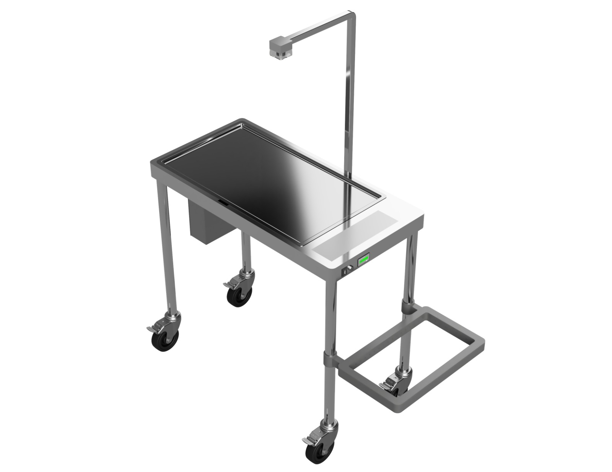
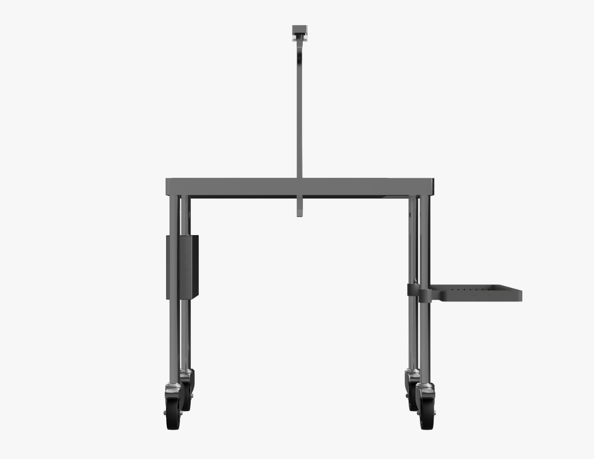
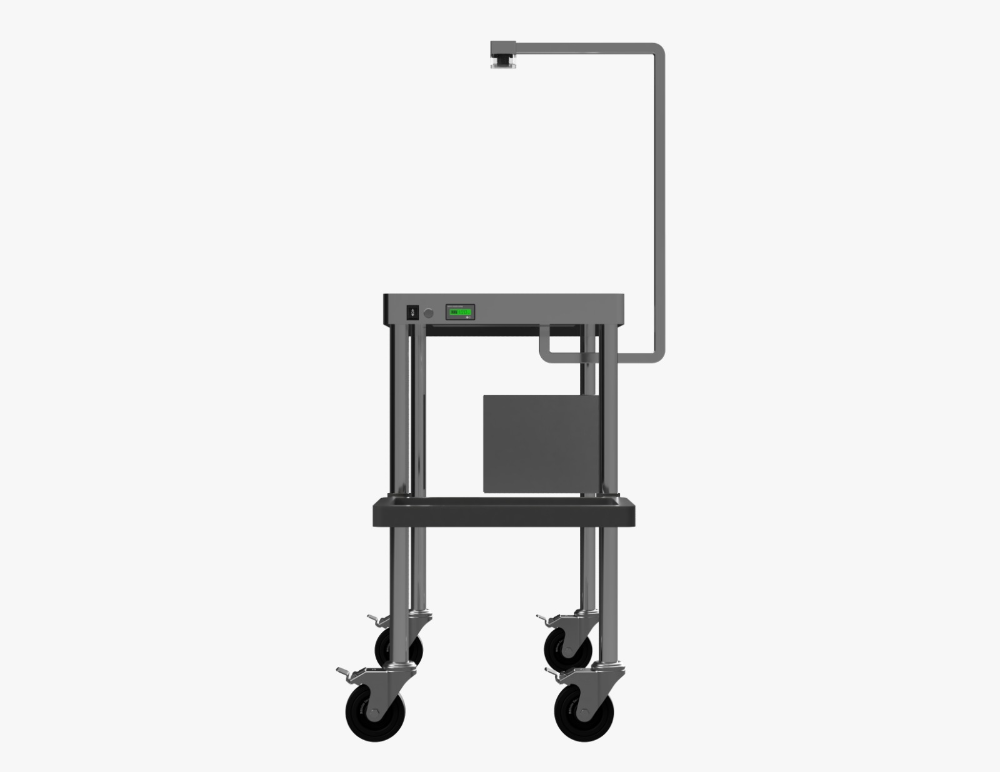
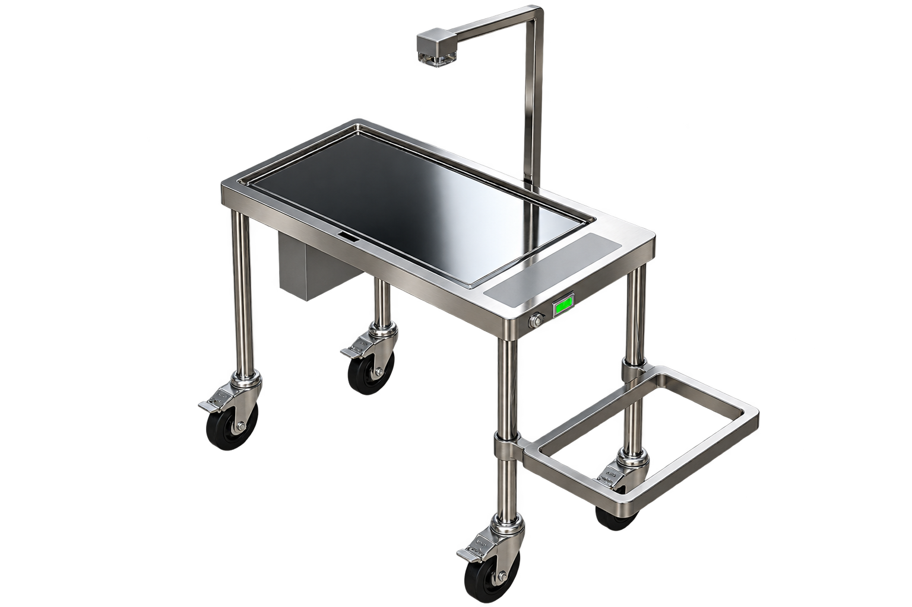

AI-assisted visibility
Computer vision supports identification and monitoring within designated accountability zones.
CountIQ Technologies presents
AI-assisted surgical item accountability designed to bring greater visibility and real-time awareness to the operating room.
Why SurgiCount
Surgical teams must account for instruments, needles, sponges, gauze, and other items introduced during a procedure.
SurgiCount is being developed as an additional technology-supported layer of visibility around existing counting practices — not as a replacement for clinical judgement or established safety protocols.
SurgiCount platform
A mobile operating-room platform combining computer vision, intelligent sensing, and real-time accountability support.

Computer vision supports identification and monitoring within designated accountability zones.
Integrated sensing adds a physical confirmation layer alongside the visual workflow.
Item status and discrepancy awareness are brought into one continuous operating-room view.
Mobility, visibility, and practical interaction are being shaped around real surgical environments.
Built, not just imagined
SurgiCount has progressed through research, workflow understanding, engineering design, and CAD development into prototype build and integration.
Current stage
The platform architecture has been translated into mechanical design and prototype preparation. As fabrication and integration advance, this space can evolve from concept renders into real build photographs.

Product presence
Public-facing product views focus on form, mobility, and workflow presence while keeping unnecessary internal engineering detail private.
Compact mobile architecture designed around the surgical workspace.
Clear working surface with the vision system positioned above the field.

Designed for mobility while keeping the working area unobstructed.
CountIQ Technologies
CountIQ Technologies LLP is focused on intelligent systems for safer operating-room workflows. SurgiCount is our first platform built around that mission.

Founder & CEO
Founder of CountIQ Technologies LLP and creator of SurgiCount. He leads product vision, research direction, and development while working with healthcare professionals, engineers, and clinical advisors.
Open to collaboration
We welcome conversations with surgeons, surgical professionals, hospitals, researchers, clinical advisors, engineers, and healthcare innovators as SurgiCount progresses toward pilot evaluation.
